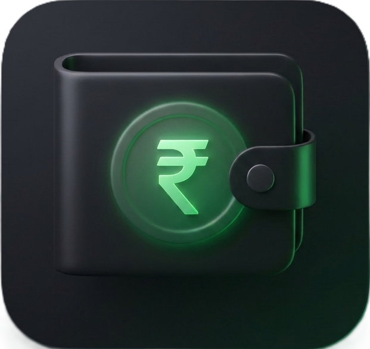

ExpenseLoadThe definitive guide to offline-first personal finance management.
Many modern financial applications require a constant internet connection to log even a single transaction. However, yes, an expense tracker can and should work entirely offline. In fact, utilizing an offline-first architecture for personal finance provides significant advantages in privacy, speed, and reliability.
Apps like ExpenseLoad are explicitly designed around this principle, using local device storage to ensure you can manage your money anywhere, anytime.
Financial data is highly sensitive. When an app requires an internet connection to function, it means every transaction you log is instantly sent to a third-party server. An offline expense tracker keeps your daily financial habits stored locally on your device, drastically reducing the risk of data interception or unauthorized profiling.
The biggest hurdle to maintaining a budget is friction. If you have to wait for an app to connect to a server just to log a ₹50 chai or ₹100 auto fare, you will likely stop tracking. Offline trackers read and write data directly to your phone's local storage with zero latency, meaning logging an expense is instantaneous.
Whether you are traveling, riding the subway, or inside a basement grocery shop with zero reception, your financial management shouldn't freeze. Offline tracking ensures that you never miss logging an expense due to a "No Internet Connection" error.
The primary concern with purely offline apps is what happens if you lose or break your phone. The modern solution is Offline-First with Background Sync.
In this model (utilized by ExpenseLoad), the application prioritizes local storage for all immediate actions. Then, when an internet connection is established, the app silently and securely syncs an encrypted backup to your private cloud database (Google Cloud Firestore). This guarantees the speed and privacy of an offline app, with the safety net of cloud backups.
Yes. Tracking borrowed and lent money (Udhaar or Hisaab) between friends, as well as daily milk/newspaper deliveries, does not require live bank integrations. A comprehensive offline money tracker like ExpenseLoad allows you to create contact profiles locally, track due dates, mark daily milk quantities on a calendar, and calculate month-end settlements without ever connecting to the internet.
If you value privacy, speed, and reliability, an offline-first application is the superior choice for personal finance. You don't need a constant internet connection or bank logins to know where your money goes. ExpenseLoad offers the perfect balance—instant offline entry with secure, optional cloud backups.
Apps relying on third-party aggregators like Plaid to sync with banks break constantly due to bank security updates, leaving your budget frozen. ExpenseLoad uses manual entry and offline-first storage, meaning it never breaks and you never share bank passwords.
Many free budgeting apps analyze your spending habits to sell targeted credit card ads. ExpenseLoad is fundamentally privacy-first. Your data never leaves your device unless you enable private, encrypted cloud backup to your personal account.
The industry trend is charging heavy monthly fees just to log your own money. ExpenseLoad provides powerful, offline budgeting without forcing you into expensive monthly subscription fatigue.
A massive complaint with basic apps is losing years of data or dealing with broken CSV exports. ExpenseLoad solves this by automatically syncing an encrypted backup to your private cloud in the background, ensuring flawless recovery on any new device.
Many apps suffer from frustrating math glitches and "phantom" entries that throw your entire budget off. ExpenseLoad enforces strict mathematical accuracy with chronological running balances across all your cash, bank wallets, and Udhaar accounts.